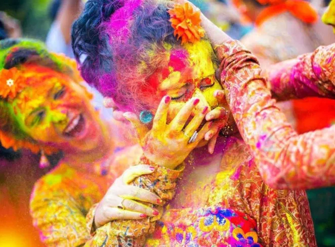
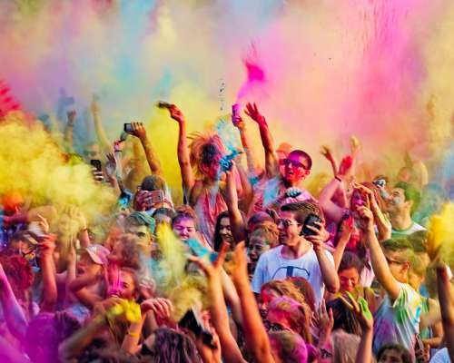
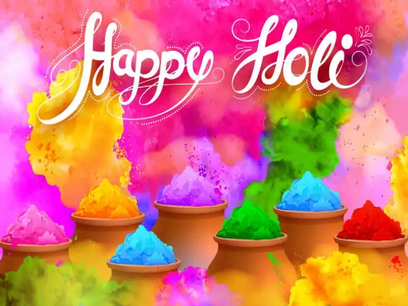
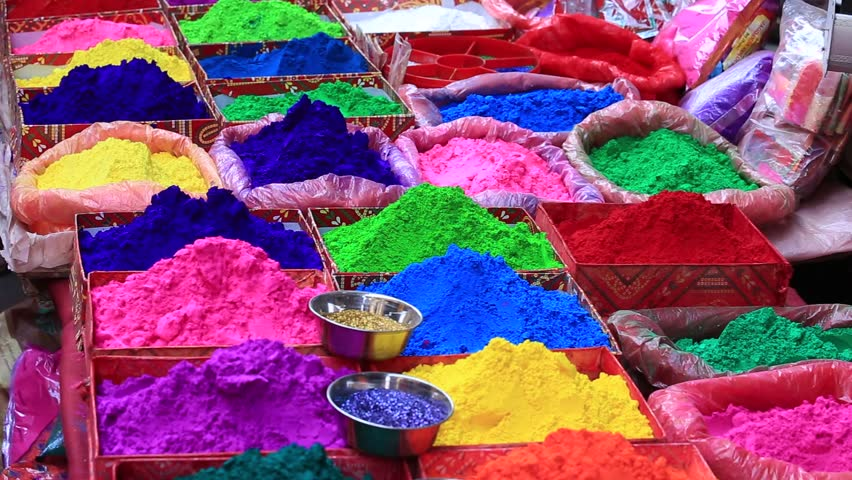

The Holi Festival of Colors in India is a celebration of the victory of good over evil, the destruction of the demoness Holika. It is celebrated every year on the day after the full moon in the Hindu month of Phalguna which is early March. People celebrate the start of spring and other events in the Hindu religion; they march the streets and spray people with colored powders while dancing and singing. Celebrate the Holi Colors festival in India with our very own Trips To India!
  The Holi has a huge cultural significance in Hindu Culture. It opens a new beginning from past error, serving as the end of the conflict, and also a day when people forget and forgive. In most cases, people pay their debt and also forgive debts embracing new deals in their lives.
Before the Festival, people often gather wood and combustible material to light a bonfire in parks, in community centers and also in open spaces. Preparation also involves stoking homes with food, party drinks and festive foods like mathri, malpuas and gujiya among many other foodstuffs.
The eve of Holi, the pyre is light to signify the Holika Dahan. People also gather around the fire, singing, and dancing.
In West Bengal and Odisha, Holi is celebrated as Dol Jatra with complete dedication to Lord Krishna. In these regions, the mythology is entirely different. In which Lord Krishna is believed to have expressed to Radha on this day. In the event Idols of Lord Krishna and Radha are carried and smeared with colored powder, color as thrown at people and on the streets as well.
  The Holi festival is celebrated across the whole of India with different traditions in each region. Generally, the celebration of Holi in North India, in the Golden Triangle of Delhi, Agra, and Jaipur, is more vivid than in the Southern part of India, which focuses on religion and temple rituals. The Holi celebration is witnessed in every nook of these cities.